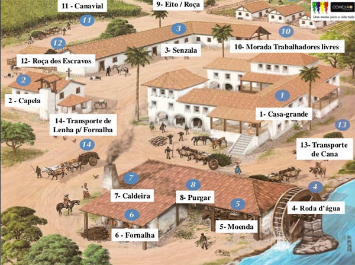

A relação entre açúcar e escravidão na África está ligada à história do comércio atlântico de escravos, que foi uma parte significativa do comércio global entre os séculos XV e XIX. O açúcar desempenhou um papel crucial nesse contexto devido à demanda crescente por esse produto na Europa e nas colônias americanas.A produção em larga escala de açúcar nas colônias europeias nas Américas, como o Brasil, o Caribe e as colônias britânicas, dependia fortemente do trabalho escravo.
Os colonizadores europeus inicialmente tentaram usar a mão de obra indígena, mas devido a vários fatores, incluindo doenças e resistência, começaram a trazer africanos escravizados em grande número para trabalhar nas plantações de açúcar. A demanda crescente por açúcar na Europa, impulsionada pelo aumento do consumo e pela expansão das plantações nas colônias, levou a um aumento significativo no comércio atlântico de escravos. Milhões de africanos foram capturados, transportados através do Oceano Atlântico em condições desumanas e forçados a trabalhar nas plantações de açúcar em condições extremamente difíceis.
O trabalho nas plantações de açúcar era notoriamente árduo e perigoso, resultando em altas taxas de mortalidade entre os escravizados. O sistema escravista nas colônias de açúcar estava profundamente enraizado na exploração e na brutalidade, com os proprietários de plantações frequentemente exercendo poder absoluto sobre a vida e a morte de seus escravizados. Portanto, a expansão das plantações de açúcar nas Américas e a necessidade de mão de obra para trabalhar nessas plantações foram fatores cruciais que contribuíram para a intensificação do comércio atlântico de escravos e para a tragédia da escravidão africana. A história dessa exploração tem profundos impactos sociais, econômicos e culturais que continuam a ser estudados e refletidos até os dias de hoje.